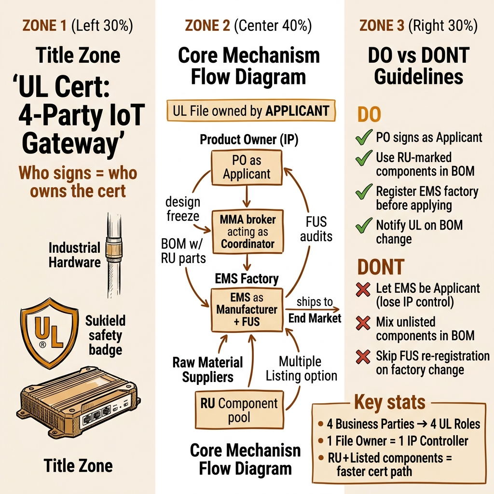

ใครเซ็นเป็น Applicant — คนนั้นเป็นเจ้าของใบรับรอง
และทุกอย่างที่ตามมา

การขอ UL certification สำหรับ IoT gateway ไม่ใช่แค่การส่งตัวอย่างให้ lab ทดสอบ แต่คือการจัดการความสัมพันธ์ระหว่าง 4 ฝ่ายธุรกิจกับระบบ UL ที่รู้จักบทบาทเพียง 4 แบบ กฎง่าย ๆ ข้อเดียวที่เปลี่ยนทุกอย่าง: ใครลงนามเป็น Applicant คนนั้นเป็นเจ้าของ UL File — และนั่นหมายถึงอำนาจควบคุม IP ของผลิตภัณฑ์ทั้งหมด
Product Owner (IP) · MMA (ตัวแทนจัดการ) · EMS (โรงงาน) · Raw Material Manufacturers (supplier)
กล่องเก็บ "สูตรของการรับรอง" — BOM, แบบ, โรงงาน, ผ่าน/ตก เปลี่ยนโรงงานหรือ BOM ต้องแจ้ง UL ทุกครั้ง
UL Listed (สินค้าสำเร็จ) · UL Recognized/RU (ชิ้นส่วน) · UL Classified (ประเมินบางด้าน) — แต่ละแบบใช้กับสินค้าต่างกัน
UL field engineer ตรวจโรงงาน EMS ต่อเนื่องตลอดอายุการผลิต ไม่ใช่แค่ครั้งเดียวหลังได้ใบรับรอง
ก่อนเข้าสู่รายละเอียด ต้องเข้าใจว่าระบบ UL ประกอบจากอะไร แต่ละส่วนทำหน้าที่อะไร และ "แตกแล้วคืออะไร" คำตอบ 5 ข้อนี้คือแกนหลักของทั้ง explainer
บทบาท: ภาชนะทางกฎหมายที่เก็บทุกอย่างของการรับรอง — ผู้ถือ File = ผู้ควบคุมใบรับรอง
ถ้าหาย/แตก: ไม่มี Applicant เดียวรับผิดชอบ → UL ไม่มีผู้ประสานงาน → กระบวนการหยุด
บทบาท: ชิ้นส่วนที่ผ่าน UL pre-vetting แล้ว ใส่ใน BOM ลดงาน investigation ของสินค้าสำเร็จ
ถ้าหาย/แตก: ชิ้นส่วนสำคัญไม่มี RU mark → ต้องทดสอบใหม่ทั้งหมด → ล่าช้าหลายสัปดาห์
บทบาท: โรงงานที่ระบุใน UL File คือที่เดียวที่ได้รับอนุญาตให้ติด UL Mark บนสินค้า
ถ้าหาย/แตก: เปลี่ยนโรงงาน EMS โดยไม่แจ้ง UL → Mark ที่ติดบนสินค้าโมฆะตามกฎหมาย
บทบาท: ระบบตรวจสอบต่อเนื่องว่าสินค้าที่ผลิตจริงตรงกับที่ได้รับรองไว้
ถ้าหาย/แตก: EMS เปลี่ยน BOM เงียบ ๆ → FUS audit ตรวจพบ → ใบรับรองถูกพัก/ถอน
บทบาท: กำหนดว่าใครรับผิดชอบอะไรในกระบวนการ UL ก่อนยื่นสมัคร
ถ้าหาย/แตก: PO สมมติว่า "EMS จัดการ UL" → EMS กลายเป็น Applicant → PO สูญเสียอำนาจควบคุม File
ได้ cert ครั้งเดียวแล้วจบ — ไม่ต้องทำอะไรต่อ
ความจริง: UL cert ผูกกับโรงงาน + BOM เฉพาะ Follow-Up Service เดินต่อเนื่องตลอดอายุผลิตภัณฑ์
เจ้าของแบรนด์เป็นเจ้าของใบรับรองอัตโนมัติ
ความจริง: เจ้าของใบรับรองคือ Applicant ซึ่งอาจไม่ใช่เจ้าของแบรนด์ ถ้าไม่ระวัง EMS อาจถือ File แทน
Supplier วัตถุดิบไม่เกี่ยวกับ UL cert ของสินค้าสำเร็จ
ความจริง: RU Recognized mark บน component ของ supplier คือรากฐานที่ทำให้ cert ของสินค้าสำเร็จเร็วขึ้นและถูกลง
ก่อนเดินหน้าขอ cert ต้องรู้ก่อนว่า UL มี "ตราประทับ" 3 แบบ แต่ละแบบใช้กับสินค้าต่างระดับ และสำหรับ IoT gateway ที่เป็นสินค้าสำเร็จพร้อมขาย คำตอบมักอยู่ที่ UL Listed — ส่วน UL Recognized เป็นเรื่องของ component ที่อยู่ข้างใน
เมื่อเห็นโลโก้ UL บน box ของ IoT gateway ที่วางขายตามห้างหรือ online นั่นคือ UL Listed mark หมายความว่าสินค้านั้นผ่านการทดสอบจาก UL Solutions อย่างครบถ้วน ทั้งด้านความปลอดภัยไฟฟ้า, อัคคีภัย, และมาตรฐานที่เกี่ยวข้อง (เช่น UL 62368-1 สำหรับ audio/video/IT equipment ที่ครอบคลุม networking gateway ส่วนใหญ่) สินค้า Listed คือสินค้าที่ "ทำงานได้ด้วยตัวเอง (standalone)" ผู้บริโภคหรือวิศวกรสามารถติดตั้งได้โดยตรงโดยไม่ต้องประเมินอีกรอบ
UL Recognized หรือที่รู้จักจาก RU mark (ตัว R กลับด้าน) คือการรับรองสำหรับ "ชิ้นส่วนที่ติดตั้งในโรงงาน ไม่ใช่สินค้าสำเร็จรูปสำหรับผู้บริโภค" เช่น power supply module, transformer, PCB assembly หรือ wire insulation ที่ raw material manufacturer ผลิตและส่งให้ EMS ใส่ใน IoT gateway ถ้า component เหล่านี้มี RU mark อยู่แล้ว กระบวนการ cert ของสินค้าสำเร็จจะเร็วขึ้นมาก เพราะ UL ไม่ต้องทดสอบ component เหล่านั้นซ้ำ
UL ใช้ระบบ "pre-vetted components" คือเมื่อ component มี RU mark แล้ว UL field engineer ในช่วง Follow-Up Service จะ verify แค่ว่า component ที่ใช้จริงตรงกับ RU mark ที่ระบุใน BOM เท่านั้น ไม่ต้องส่ง lab test ใหม่ทุกครั้ง ในทางตรงข้าม ถ้า critical component ไม่มี RU mark (เช่น power supply ที่ผลิตเองโดย EMS โดยไม่ผ่านการ certify) UL อาจต้องทดสอบ component นั้นแยกก่อน ซึ่งอาจใช้เวลาหลายสัปดาห์และเพิ่มค่าใช้จ่ายหลายพันดอลลาร์
สำหรับ raw material manufacturers ในห่วงโซ่ของ IoT gateway: การลงทุนขอ RU mark สำหรับ components หลักเป็น "value proposition" สำคัญที่ทำให้ EMS และ Product Owner เลือก supplier นั้น ๆ มากกว่าคู่แข่ง
UL Classified ใช้เมื่อ UL ประเมินสินค้าเพียงบางด้านเฉพาะเจาะจง เช่น ประเมินเฉพาะด้านไฟไหม้หรือสิ่งแวดล้อม ไม่ใช่ประเมินครบ ในห่วงโซ่ IoT gateway พบน้อยกว่า Listed/Recognized แต่อาจเจอในกรณี gateway ที่ต้องติดตั้งในสภาพแวดล้อมพิเศษ เช่น industrial enclosure หรือ hazardous location
UL Solutions รู้จักบทบาทหลักเพียง 4 แบบ: Applicant, Manufacturer, Multiple Listee และ Subscriber แต่ห่วงโซ่ธุรกิจของ IoT gateway มี 4 ฝ่ายที่ไม่ตรงกับ UL roles ทุกประการ งานของทีมคือ map อย่างถูกต้องก่อนเริ่มกระบวนการ เพราะเมื่อลงนามแล้วแก้ยาก
แผนผัง Role Mapping — ฝั่งซ้าย: 4 ฝ่ายธุรกิจ · ฝั่งขวา: บทบาท UL ที่ map กัน · เส้นประ = MMA ที่ UL ไม่มีบทบาทตรงตัว
กับดักที่พบบ่อยที่สุดใน IoT startup ที่ใช้ EMS ครั้งแรก คือการปล่อยให้ EMS "จัดการ UL ให้" โดยไม่รู้ว่าการทำเช่นนั้นหมายความว่า EMS กลายเป็น Applicant และถือ UL File ของสินค้าที่ PO สร้างขึ้นมาเอง สิ่งที่ตามมาคือ PO กลายเป็นแค่ Multiple Listee และสูญเสียอำนาจควบคุมทั้งหมด
ตาม UL Multiple Listing Service Terms: "Multiple Listing Service does not result in a separate product safety certification for the Multiple Listee" และที่สำคัญกว่านั้น: "If the Basic Applicant decides to withdraw the Basic Product for any reason, the Multiple Listing Service for the Multiple Listee will be automatically withdrawn at the same time"
แปลตรง ๆ ว่า: ถ้า EMS (Basic Applicant) ตัดสินใจถอน UL File ไม่ว่าจะด้วยเหตุผลอะไรก็ตาม — ทะเลาะกัน, ยกเลิก contract, ล้มละลาย, หรือแค่ไม่ต้องการจ่ายค่า FUS ต่อ — ใบรับรองของ PO หายไปทันที PO ไม่สามารถโต้แย้งหรือโอน File ออกมาได้เพราะไม่ได้เป็นเจ้าของ
1. EMS เปลี่ยน supplier: EMS ในฐานะ Applicant มีสิทธิ์เปลี่ยน component ใน BOM ได้โดยประสาน UL โดยตรง PO อาจไม่รู้ว่า BOM เปลี่ยนจนกระทั่ง UL audit พบปัญหา
2. EMS รับลูกค้าใหม่ที่เป็นคู่แข่ง: EMS อาจ "ขาย" ความรู้เรื่อง cert workflow ของ PO ให้คู่แข่ง หรือใช้ RU suppliers เดียวกันเพื่อทำ cert ให้คู่แข่งเร็วขึ้น
3. ต้องการเปลี่ยน EMS: ถ้า PO ต้องการย้ายไป EMS ใหม่ ต้องเริ่ม cert ใหม่ทั้งหมด เพราะ UL File เดิมอยู่กับ EMS เก่า ต้นทุนที่แท้จริงของ "ให้ EMS จัดการ" จึงปรากฏชัดในภายหลัง
ในโครงสร้างที่ดี PO ลงนามเป็น Applicant โดยตรงกับ UL Solutions PO ถือ UL File ระบุ EMS ใน File ในฐานะ "Manufacturer" (โรงงานที่ได้รับอนุญาต) ถ้า EMS เปลี่ยน PO แจ้ง UL เพิ่ม/ลด manufacturer locations ใน File โดยไม่ต้องเริ่ม cert ใหม่ทั้งหมด IP ของสินค้าอยู่กับ PO ทั้งด้าน design และ certification
กระบวนการ UL certification ของ IoT gateway ในห่วงโซ่ 4 ฝ่ายไม่ใช่เส้นตรงจาก A ไป Z แต่เป็นงานคู่ขนานที่ต้องประสานกัน PO ดูแล design และ application, MMA ประสาน EMS และ suppliers, EMS เตรียมโรงงานและ process, Suppliers เตรียม RU components ทั้งหมดต้องพร้อมก่อน UL สามารถออก mark ได้
6 phases ของ cert workflow — แถวบน: งาน PO · แถวล่าง: งาน EMS + Suppliers · Phase ⑥ FUS เดินต่อเนื่องตลอดอายุการผลิต
แต่ละ phase ในกระบวนการ cert มีผู้รับผิดชอบชัดเจน เข้าใจ "งานของใคร" ในแต่ละขั้นช่วยให้ MMA วางแผนได้ถูกต้องและไม่มีจุดว่างที่ไม่มีใครดูแล
Product Owner เป็นผู้รับผิดชอบหลักใน phase แรก: lock design ให้สมบูรณ์ก่อนยื่น application (การเปลี่ยน design หลังยื่นแล้วต้องเสียเงินทดสอบใหม่), เตรียม BOM ที่ระบุ RU components อย่างชัดเจน, และยื่น application กับ UL Solutions โดยระบุตัวเองเป็น Applicant และ EMS เป็น Manufacturer location MMA ทำหน้าที่ review BOM ร่วมกับ EMS เพื่อยืนยันว่า components ที่ระบุสอดคล้องกับสิ่งที่ EMS จัดหาได้จริง
EMS ผลิต engineering sample (ES) ตาม locked BOM ส่งไปยัง UL-accepted laboratory ซึ่งอาจเป็น UL Solutions เองหรือ NRTL (Nationally Recognized Testing Laboratory) ที่ UL ยอมรับ ตัวอย่างจะถูกทดสอบตาม standard ที่เกี่ยวข้อง — สำหรับ IoT gateway ที่พบบ่อยคือ UL 62368-1 (Audio/Video, IT, and Communication Equipment) ซึ่งครอบคลุม networking และ IoT devices ในระดับ consumer และ commercial
UL 62368-1: มาตรฐานหลักสำหรับ audio/video/IT/communication equipment ครอบคลุมด้านความปลอดภัยไฟฟ้า (electrical shock), ความร้อน (thermal), อัคคีภัย (fire), และ mechanical stress สำหรับ IoT gateway ที่เชื่อมต่อ internet ทั้ง consumer และ commercial grade
UL 2900-2-2: สำหรับ IoT gateway ที่มี cybersecurity requirements เช่น industrial network gateway หรือ gateway ที่เชื่อมต่อกับ critical infrastructure
FCC + UL: หลายกรณี IoT gateway ต้องผ่านทั้ง FCC Part 15 (radio frequency) และ UL safety — สองกระบวนการนี้ต้องทำคู่ขนานหรือตามลำดับที่วางแผนไว้
Certification Data File (CDF) คือ "พิมพ์เขียว" ของสินค้าที่ได้รับรอง ระบุ BOM อย่างละเอียด, critical safety components (power supply, fuse, capacitor ที่มี RU mark), schematic, และ physical dimensions UL field engineer ใช้ CDF นี้เป็น reference ในทุก FUS audit ที่ตามมา — ถ้าสินค้าบน production line ไม่ตรงกับ CDF ถือว่า violation แม้ความแตกต่างเล็กน้อย
ก่อนออก UL Mark ครั้งแรก UL field engineer ต้องเข้าตรวจโรงงาน EMS (initial inspection) เพื่อยืนยัน production process, การใช้ RU components ตาม BOM, และระบบ traceability ของ EMS ถ้า EMS ผ่าน UL จะ setup FUS program สำหรับโรงงานนั้น หลังจากนั้น UL field engineer จะตรวจซ้ำแบบ "ongoing" ตลอดอายุการผลิตโดยไม่แจ้งล่วงหน้า เพื่อป้องกัน process drift
ทุกบริษัทที่เริ่ม cert journey ต้องตอบคำถามว่า "เราจะถือ UL File เองหรือจะ ride บน File ของคนอื่น?" แต่ละทางเลือกมี trade-off ที่ชัดเจนและผลกระทบระยะยาวต่อ supply chain flexibility และ IP control
ในกรณีที่ PO มี engineering team ที่เข้าใจ UL requirements และสามารถ manage relationship กับ UL โดยตรงได้ Pattern A คือทางเลือกที่ดีที่สุด PO สมัครเป็น Applicant, ระบุ EMS เป็น Manufacturer Location บน File, และสามารถเพิ่ม/ลด manufacturer locations ได้เมื่อต้องการเปลี่ยนหรือเพิ่ม EMS ในอนาคต ต้นทุนเพิ่มขึ้นบ้างในด้าน admin และ UL fees แต่ได้ control เต็มที่
ถ้า EMS หรือ ODM ที่ทำงานด้วยมี UL File สำหรับสินค้า "platform" หรือ "base product" อยู่แล้ว PO สามารถขอ Multiple Listing เพื่อให้ชื่อและ brand ของ PO ปรากฏบนสินค้านั้น ได้เร็วกว่าและถูกกว่า เพราะข้ามขั้นตอน testing ทั้งหมด แต่ต้องยอมรับข้อจำกัด: PO ไม่ใช่เจ้าของ File, ไม่มี "visible link" จาก Multiple Listee ไปยัง Basic Applicant ใน UL directory, และถ้า Basic Applicant ถอน File — cert หาย
สมเหตุสมผลเมื่อ:
ไม่สมเหตุสมผลเมื่อ:
ความเข้าใจผิดที่พบมากที่สุดเรื่อง UL certification คือ "ได้ cert แล้วก็จบ" ความจริงคือ UL cert ไม่ใช่ one-time event แต่เป็น ongoing commitment ระหว่าง PO, EMS, และ UL Solutions ตลอดอายุการผลิตสินค้า Follow-Up Service (FUS) คือกลไกที่ทำให้ความมั่นใจนั้นเกิดขึ้นจริง
Follow-Up Service เป็นโปรแกรม ongoing onsite certification inspections ที่ UL Solutions ดำเนินการที่โรงงาน EMS โดยตรง UL field engineer เข้าตรวจโดยไม่แจ้งล่วงหน้าเพื่อยืนยันว่า: (1) สินค้าที่กำลังผลิตตรงกับ CDF ที่ approved ไว้, (2) components ที่ใช้ตรงกับ BOM ที่ระบุ — โดยเฉพาะ RU Recognized components ต้องใช้ถูก part number และ manufacturer, (3) UL Mark ถูกติดถูกต้องตามที่กำหนด และ (4) production process ไม่มีการเปลี่ยนแปลงที่ไม่ได้แจ้ง UL
เมื่อ supply chain บังคับให้ต้องเปลี่ยน component (เช่น shortage หรือ EOL) กระบวนการที่ถูกต้องคือ:
EMS ที่ข้ามขั้นตอนนี้ — เปลี่ยน component โดยไม่แจ้ง UL — อาจพบปัญหาในครั้ง FUS audit ถัดไป และ UL อาจสั่ง suspend การใช้ UL Mark จนกว่าจะแก้ไขได้
MMA มีบทบาทสำคัญในการเป็นตัวกลางระหว่าง PO กับ EMS ในเรื่อง FUS compliance เพราะ PO มักไม่ได้อยู่ในโรงงาน EMS ทุกวัน MMA ทำหน้าที่ monitor ว่า EMS ปฏิบัติตาม CDF อย่างสม่ำเสมอ, แจ้ง PO เมื่อ EMS ต้องการเปลี่ยน BOM, และ coordinate การยื่น change request กับ UL ก่อนที่ EMS จะเปลี่ยนจริง สิ่งนี้เป็น value proposition ที่ชัดเจนที่สุดของ MMA ในห่วงโซ่ cert
ในห่วงโซ่ 4 ฝ่าย จุดที่พังบ่อยที่สุดไม่ใช่ lab testing ล้มเหลว แต่คือ "ช่องว่างระหว่างฝ่าย" ที่ไม่มีใครรับผิดชอบ MMA ที่มีประสิทธิภาพสามารถป้องกัน failure modes หลัก ๆ ได้โดยเป็น "ตัวเชื่อม" ที่ UL ระบบไม่ได้จัดไว้ให้
PO ยื่น application ก่อน lock BOM เสร็จสมบูรณ์ ทำให้ต้องเปลี่ยน component หลังยื่นแล้ว นำไปสู่ construction change requests, retesting, และ delay MMA ป้องกันได้โดย enforce "design freeze checklist" ก่อนอนุมัติให้ PO ยื่น application
EMS ที่ไม่เคยผ่าน UL FUS มาก่อนมักประเมิน prep time ต่ำไป การเตรียมโรงงานให้ผ่าน initial inspection ต้องใช้เวลา 4-12 สัปดาห์ขึ้นกับ process ที่มี MMA ที่มีประสบการณ์จะ pre-audit EMS ล่วงหน้าก่อนที่ UL field engineer มาตรวจจริง
| Failure Mode | ฝ่ายที่เสี่ยง | วิธีป้องกัน |
|---|---|---|
| PO ปล่อย EMS เป็น Applicant | PO สูญเสีย IP control | PO ลงนาม application เอง; contract กับ EMS ระบุชัด |
| BOM มี component ไม่มี RU mark | Delay testing + cost เพิ่ม | Supplier selection: prefer RU-recognized components |
| EMS เปลี่ยน component โดยไม่แจ้ง | FUS violation, cert suspended | MMA monitoring + change control gate |
| เปลี่ยนโรงงาน EMS โดยไม่แจ้ง UL | Mark โมฆะ legal liability | แจ้ง UL เพิ่ม manufacturer location ก่อนย้าย |
| Multiple Listing: EMS ถอน File | PO cert หายทันที | Pattern A หรือ contractual protection ที่แน่นหนา |
| Design เปลี่ยนหลังยื่น application | Retesting cost + delay | Design freeze discipline ก่อน application |
UL Solutions รู้จัก Applicant, Manufacturer, และ Multiple Listee แต่ไม่มีบทบาท "ตัวกลางประสาน" ในระบบ MMA จึงเป็นบทบาทที่ถูกสร้างขึ้นโดย market เพื่อเติมช่องว่างนี้ ในทางปฏิบัติ MMA ทำงาน 3 ระดับ: (1) Pre-cert — validate BOM, เลือก EMS ที่มี FUS track record ดี, ประสาน UL application; (2) During cert — coordinate testing samples, ติดตาม status กับ UL; (3) Post-cert — monitor FUS compliance, manage BOM change requests, เตือน PO เมื่อ EMS ส่งสัญญาณอยากเปลี่ยน component